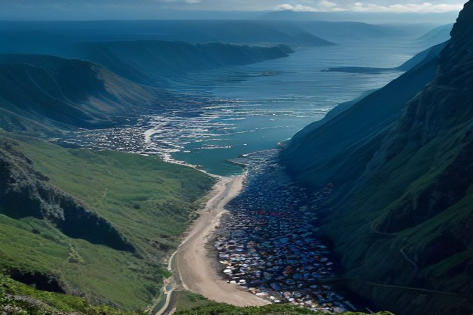

Se state cercando Fajã dos Padres su Madeira, vi serve sapere subito tre cose: non c'è nessuna strada che ci arrivi, ci si va in funivia o in barca, e si può fare il bagno. Il resto di questa guida vi aiuta a scegliere come andarci, che cosa troverete laggiù e in quale periodo conviene.
Che cos'è la fajã dei preti, e perché tutti ne parlano
Una fajã è una fascia di terra pianeggiante e fertile, nata da una vecchia frana o da una colata di lava. Questa si trova a livello del mare, schiacciata tra l'Atlantico e una scogliera di 300 metri, sulla costa meridionale, vicino a Câmara de Lobos. Da Funchal, fino al bordo della scogliera, ci vogliono circa 15 minuti in auto. Per scendere, però, la strada finisce.
Il nome vuol dire "la fajã dei preti". Furono i gesuiti a coltivarla, a partire dal Settecento, e piantarono le viti di Malvasia che ancora oggi finiscono nel vino di Madeira. Oggi è una proprietà privata e una fattoria biologica in attività, certificata dal 2008: banane, manghi, avocado e vigneti su terrazze che scendono verso l'acqua.

Come si arriva a Fajã dos Padres: funivia o barca
Le strade sono due, e fanno vivere la stessa baia in modo quasi opposto.
In funivia
Una funivia aggrappata alla parete percorre il dislivello di 300 metri dal 2003. Vi lascia in cima alle terrazze e da lì si scende a piedi, per un breve tratto tra le piante di banano, fino all'acqua. È la scelta giusta se volete vedere la fattoria e magari sedervi a tavola. Orari e prezzi della funivia non li riportiamo qui: controllateli prima di partire, perché possono cambiare.
In barca
Prima della funivia, per oltre due secoli, la fajã si raggiungeva soltanto dal mare: abitanti e preti arrivavano e ripartivano così. È ancora la via che sceglie la maggior parte delle gite in barca private. Arrivando dall'acqua si salta la funivia e ci si ritrova direttamente davanti alla baia. Se il vostro obiettivo è nuotare e non visitare la fattoria, è la differenza che conta.
In pratica: la funivia è una visita a terra con un po' di cammino, la barca è un bagno con la scogliera sopra la testa.
Fajã dos Padres: si può fare il bagno?
Sì, ed è uno dei punti migliori della costa sud di Madeira proprio per questo: le scogliere riparano la baia dal vento che altrove increspa l'acqua. Nelle giornate calme il mare resta piatto e limpido, ideale per tuffarsi direttamente da una barca, per fare snorkeling lungo gli scogli o per uscire con una tavola da paddle.
Sulla fajã c'è anche una piccola piscina di acqua salata, che torna utile nei giorni in cui l'onda dell'Atlantico rende più mosso il tratto di mare aperto. Come sempre, però, il mare decide: non si può garantire il bagno ogni singolo giorno dell'anno.
La spiaggia di Fajã dos Padres: sabbia o sassi?
Niente sabbia. Come quasi tutta la costa di Madeira, qui trovate ciottoli e roccia vulcanica scura, e intorno a Funchal non esiste una spiaggia naturale di sabbia. A piedi nudi si cammina, con un po' di attenzione, ma le scarpette da scoglio rendono entrata e uscita molto più comode, soprattutto se vi tuffate da una barca e non entrate dalla riva. Mettetele in borsa.
Mangiare a Fajã dos Padres
C'è un ristorante proprio sull'acqua, ai piedi della funivia: pesce alla griglia e prodotti della fattoria. In alta stagione è frequentato, quindi se scendete in funivia apposta per pranzare conviene prenotare. Sulla proprietà si possono anche affittare alcuni cottage per un soggiorno più lungo.
Se invece ci arrivate in barca, il tavolo conta poco: il bello visto dal mare è il bagno e il paesaggio. A bordo, con Chifbay, cibo e bevande sono comprese.
Quando andare a Fajã dos Padres
Da fine primavera a inizio autunno, quando l'Atlantico è abbastanza calmo da nuotare senza pensieri e la baia non riceve onda diretta. Le mattine sono di solito le più quiete, prima che si alzi il vento del pomeriggio lungo la costa sud. Per questo, in barca, un'uscita presto ha senso in generale.
Fuori stagione l'acqua è molto più fredda e il bagno smette di essere il motivo della visita. Resta il colpo d'occhio sulla scogliera, ma è un'altra gita.
Fajã dos Padres in barca da Funchal con Chifbay
Fajã dos Padres è una delle due soste per il bagno della gita in giornata privata di Chifbay, con partenza da Marina do Funchal, Pontile C. L'uscita è alle 10:00 o alle 14:00. Si passa da Câmara de Lobos e da Cabo Girão, poi la barca getta l'ancora a Fajã dos Padres per nuotare, tuffarsi e provare le tavole da paddle.
- 2 ore e 30, fino a Ribeira Brava: 500 euro.
- 3 ore, fino a Ponta do Sol: 600 euro.
Il prezzo è per l'intera barca, mai a persona: la barca è solo per il vostro gruppo, fino a 5 persone, con due skipper abilitati di Madeira. Sono inclusi cibo e bevande a bordo, un video a 360° con Insta360, le riprese con il drone (se il meteo lo permette) e foto scattate con una vera macchina fotografica. La cancellazione è gratuita fino a 24 ore prima della partenza.

Se preferite una gita più breve e senza bagno, c'è il tramonto in barca privata: parte 1 ora e 15 prima del tramonto, tutto l'anno. Sono 2 ore fino a Cabo Girão per 400 euro, oppure 2 ore e 30 fino a Ribeira Brava per 500 euro. Non c'è sosta per nuotare. Per un confronto con le altre uscite c'è la pagina sulle gite in barca a Madeira, e per i dettagli pratici la pagina informazioni.
Funivia o barca: come scegliere
- Volete nuotare e basta: barca. Vi fermate davanti alla baia, nell'acqua riparata dalla scogliera.
- Volete la fattoria e il pranzo sul mare: funivia, con prenotazione in alta stagione.
- Siete in gruppo o in famiglia: la barca è tutta vostra, e il prezzo si divide tra tutti voi.
- Soffrite il mare: la funivia evita ogni onda, ma sappiate che la costa sud è per lo più riparata.
Che cosa porterei in borsa: costume, asciugamano, scarpette da scoglio, crema solare e qualcosa per coprirsi dopo il bagno.
Due secoli di preti, banane e una funivia: all'acqua non importa come ci siete arrivati.
Comunque scegliate di arrivarci, a Fajã dos Padres entrare in acqua è la cosa che conta. Scogliera e fattoria vengono da sé.